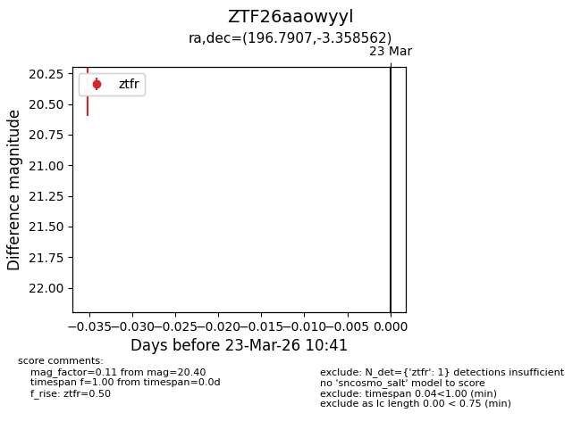
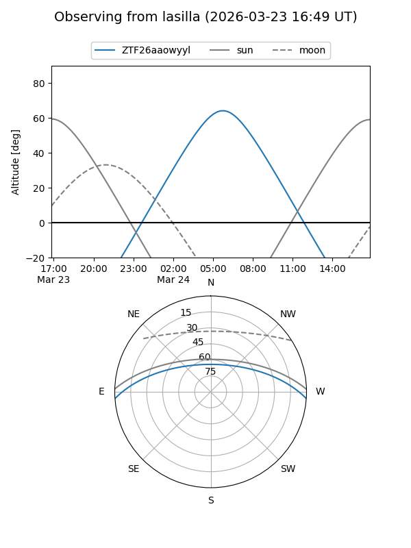
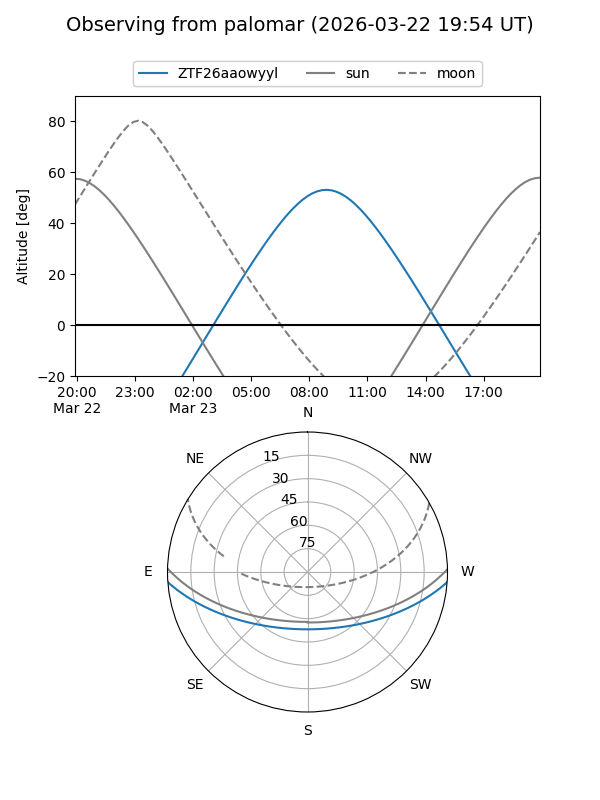

ZTF26aaowyyl
Target ZTF26aaowyyl at 2026-03-23 10:46
Aliases and brokers:
FINK: link
Lasair: link
ALeRCE: link
alt names
ZTF26aaowyyl (ztf,fink_ztf)
Coordinates:
equatorial (ra, dec) = 196.7907,-3.35856
equatorial (HMS+DMS) = 13:07:09.77,-03:21:30.82
galactic (l, b) = (310.6309,+59.27792)
Flags:
Photometry:
last ztfr=20.40
1 ztfr detections
Lightcurve

Visibility


Additional plots